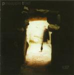

| Artist: | Pineapple Thief |
| Title: | 137 |
| Label: | Cyclops CYCL 106 |
| Length(s): | 71 minutes |
| Year(s) of release: | 2002 |
| Month of review: | [09/2002] |
| 1) | Lay On The Tracks | 4.44 |
| 2) | Perpetual Night Shift | 5.27 |
| 3) | Kid Chameleon | 6.56 |
| 4) | Incubate | 3.28 |
| 5) | Doppler | 7.33 |
| 6) | Ster | 4.05 |
| 7) | 137 | 5.09 |
| 8) | Release The Tether | 5.09 |
| 9) | How Did We Find Our Way? | 3.54 |
| 10) | Preserve | 5.44 |
| 11) | Warm Me | 3.36 |
| 12) | Pvs | 11.29 |
| 13) | Md One | 3.48 |
Perpetual Night Shift has smooth echoey ahhhs and is rhythmically quite modern. One of the things about Vulgar Unicorn and this project is that they try to incorporate recent music into progressive rock in the same way that Porcupine Tree is trying. The latter band is also the main reference if you want to learn what Pineapple Thief is like. It is ewasy to float away on this song on which we later hear choral keyboards combined with something reminiscent of Greek music.
Kid Chameleon is typical British rock in Porcupine Tree style, lots of details, lots of variation. Wonderful. Later the music winds down for some still acoustic guitar and doubled vocals. Incubate is a more straightforward rock track with a catchy chorus and jumpy rhythm guitar.
Doppler is again in a more PT influenced style with a somber intermezzo. The transitions are again well-done and the acoustic playing is beautiful. After Ster, we come to the echoey and spacy 137. At first the song has a definite lone desert feel, later its gets to be more raw, edgy and angular almost King Crimson like.
Release The Tether features a flute while How Did We Find Our Way? and Preserve are in a style now already familiar. Warm Me is a bit noisy and has a certain Buggles feel, possibly becuase of the vocals. For the rest: many strings and a beautiful piano.
Pvs is by far the longest track on the album going from a long dreamy beginning and the combination of Fender Rhodes piano and percolating acoustic guitar to a loud hallucinating rock part reminiscent of Led Zeps Kashmir. Wow. The slumbering intermezzo sounds like breathing.
Md One is mainly acoustic playing with some very strong melodic material.